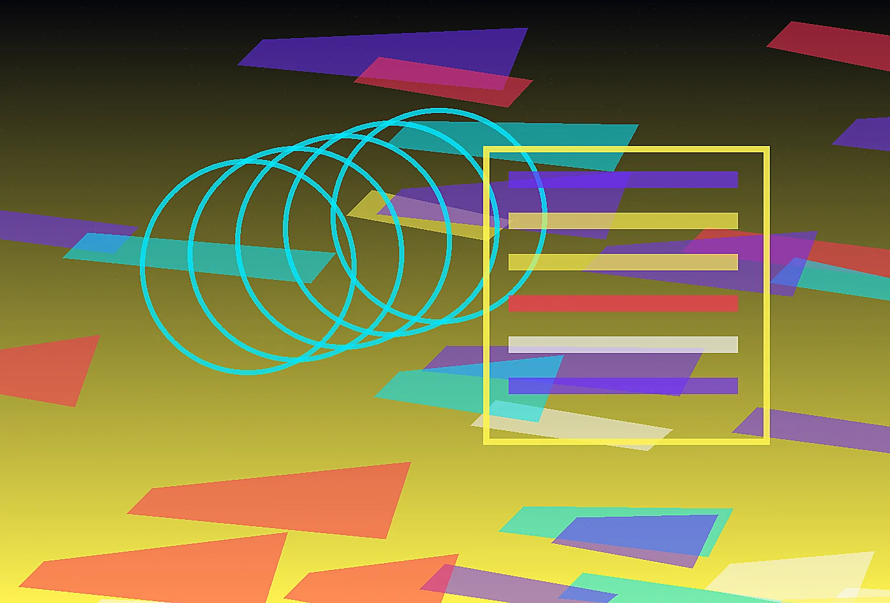

Performance Menu Engineering
We turn athlete goals into practical menus, prep rhythms, allergen systems, and flexible fueling moments that travel across a full season.
Explore serviceChromatic sports science command center
Explore the service architecture behind PulseForge. Each offer is designed to create visible improvement, durable internal habits, and a client experience that feels intentionally made rather than borrowed.
Ignite the kitchen
PulseForge offers three core services, each built to move from diagnosis to usable change. We avoid abstract strategy that cannot survive staffing, budget, weather, travel, or governance. The work is collaborative, documented, and direct enough for teams to use without translation.
Some clients need a two-week diagnostic, others need a full concept system or retained advisory during launch. We match the engagement to the decision ahead. Every format includes a clear owner, working cadence, deliverables, and criteria for success.

Recommendations are grounded in interviews, site observation, operational constraints, content review, and prototype response. Taste matters, but unsupported taste is not enough. We show the reason behind each move.
Deliverables may include journey maps, editorial guidelines, implementation checklists, service scripts, spatial notes, asset direction, measurement plans, and decision briefs. Each artifact is written for the people who will actually use it.
Each recommendation is built for the pace of sport. We consider who opens the kitchen, who stocks the bus, who answers athlete questions, who approves substitutions, and who reviews spend after the adrenaline of competition has passed. That operating view keeps the work practical even when the visual system feels bold.
The work also includes adoption planning, because a brilliant menu system fails if athletes cannot understand it at speed or if kitchen teams cannot reproduce it on a difficult week. We build colorful cues, prep logic, substitution rules, and review habits that make the system resilient rather than dependent on one energetic launch.